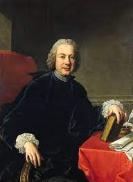

NovelNest. |
| Metastasio | Lorenzo da Ponte | Arrigo Boito |
| Francis Money-Coutts | E.M. Forster | Stephen Sondheim |
| Metastasio (1698–1782) | |
| The most important writer of opera seria – ‘serious’ Italian opera – Pietro Trapassi, known as Metastasio, was one of the most celebrated librettists in Europe. His words were set by numerous composers, including Caldara and Hasse. Well-suited for virtuoso sopranos and castrati, Metastasio’s words fell out of fashion as opera moved towards the more psychological interests of Gluck and Mozart. |  |
| Lorenzo da Ponte (1749 –1838) | |
| The French duo Meilhac and Halévy wrote a large number of opera and operetta libretti. Their most famous collaboration was with Bizet on ‘Carmen’. For Offenbach, they wrote – among others - 'La belle Hélène' and 'La vie parisienne.' Anna Caterina Antonacci is pictured as Carmen in the 2008 Royal Opera production. | |
| Arrigo Boito (1842-1918) | |
| Boito was an Italian poet, journalist, novelist, librettist and composer, best known today for providing the words to Verdi's Otello and Falstaff, although their efforts to turn 'King Lear' into an opera never materialised. Boito's own opera Mefistofele is itself full of sublime music. Verdi was not impressed saying Boito 'aspires to originality but succeeds only at being strange.' Boito also wrote the libretto for 'La Gioconda' by Ponchielli. |  |
| Francis Money-Coutts (1852-1923) | |
| Money-Coutts was the wealthy heir to the Coutts banking family. Considered too unstable to work for the family firm, he became an admirer of the music of the Spanish composer Albéniz. Coutts offered to become the composer's benefactor on condition Albéniz always used Coutts' own libretti for his operas. They wrote three together - including 'Merlin', the first instalment of an unrealised Arthurian trilogy. |  |
| E.M. Forster (1879-1970) | |
| Author E. M. Forster met and became friends with Benjamin Britten before the Second World War. In 1948, they discussed whether Forster would write a libretto, and by that November, Herman Melville's 'Billy Budd' was suggested as a possible subject. Forster agreed and worked with Eric Crozier, a regular Britten collaborator, to write the opera. Nathan Gunn is pictured performing the title roll at the Metropolitan Opera, New York, in 2012. |  |
| Stephen Sondheim (b.1930) | |
| The outstanding lyricist of our time, Sondheim was mentored by Oscar Hammerstein II who was like a surrogate father to him. Sondheim's big break came when he wrote the lyrics to 'West Side Story' for Leonard Bernstein. Such masterpieces as 'Follies', 'Company', 'Sweeney Todd' (pictured) and 'Into the Woods' have followed. |  |